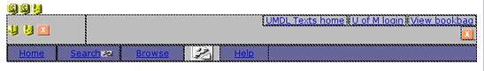

Macromedia Dreamweaver MX (DMX) is built on a fairly robust extensibility model that uses XML and TXT configuration files for defining everything from allowed document types to markup colors, and also provides APIs for developing custom behavior modules, "extensions," that can be added to the default tools set for the application. The pull-down menu behavior included in the navigation bar for release 10 was created by just such an "extension" created by the firm Project Seven. Taking advantage of that model allows us to configure Dreamweaver so that DLXS template files with .tpl extensions and unique PI markup can be opened and edited easily. Directions for setting the proper configurations are included in the sections below.
(Note: Much of what is discussed below mirrors directions given in the DMX help "book" Extending Dreamweaver MX, in the Overview chapter, under sub-heading "Extensible document types in Dreamweaver.")
Dreamweaver can be configured to recognize custom file types, and to render their appearance in ways unique to that document type.
To open a DLXS template file with extension .tpl, we first need to define the document type to DMX. Document types are defined in the MMDocumentTypes.xml file, located in the DMX folder in the
/Configuration/DocumentTypes/ path.
To add the a DLXS document "type" open MMDocumentTypes.xml
in a text editor and create a new documenttype element like this
(or simply replace your current MMDocumentTypes.xml file with this pre-edited version . Right- or ctrl-click the link to save it to your computer. ):
The
<documenttype id="TPL" internaltype="HTML" winfileextension="tpl" macfileextension="tpl" file="Default.html" writebyteordermark="false">
<TITLE>
<MMString:loadString id="mmdocumenttypes_64" />
</TITLE>
<description>
<MMString:loadString id="mmdocumenttypes_65" />
</description>
</documenttype>
internaltype="HTML" attribute value tells DMX to treat
tpl files just like HTML files, so that HTML elements in the template files will
be rendered properly in the editor design view. The DMX help documentation gives
a full, detailed explanation of the structure of this file.
For Windows 2000 and Windows XP platforms:
< drive>:\Documents and Settings\<username>\ ¬Application Data\Macromedia\Dreamweaver MX\Configuration
For Windows NT platforms:
< drive>:\WinNT\profiles\<username>\ ¬Application Data\Macromedia\Dreamweaver MX\Configuration
For Mac OS X platforms:
< drive>:Users:<username>:Library:Application Support: ¬Macromedia:Dreamweaver MX:Configuration
Open the file, and add an entry for tpl files by creating a new line (i.e., at the bottom) and inserting
TPL:DLXS Template Files
(or simply replace your current extensions.txt file with this pre-edited version . Right- or ctrl-click the link to save it to your computer. )
In the document type definition shown above, the content of the TITLE and
DESCRIPTION elements was provided by an MMString:loadString directive,
which simply references a unique string in a separate strings file to insert
as the value. (This value is the label that will appear in a "create new document"
dialog.) In this case, we referenced for the TITLE and DESCRIPTION elements
the strings identified as mmdocumenttypes_64 and mmdocumenttypes_65,
respectively. To declare those strings, we need to edit the documenttypes.xml
file, located in the DMX folder
in the
/Configuration/Strings/ path.
Open the documenttypes.xml file and insert ...
<string id="mmdocumenttypes_64" value="TPL" />
<string id="mmdocumenttypes_65" value="<![CDATA[TPL document]]>" />
(or simply replace your current documenttypes.xml file with this pre-edited version . Right- or ctrl-click the link to save it to your computer. )
Completing the steps above assures that DMX will open a .tpl file and attempt to treat it like an HTML file. There still remains the issue of how it should attempt to display the custom PI tags included in template files. DMX provides a mechanism for defining third party tags that we can utilize. Instructions for defining PIs as third parth tags are given in the next two sections.
Dreamweaver defines how to process non-HTML tags by referencing the Tags.xml file located in DMX folder in the
/Configuration/ThirdPartyTags/ path.
To add the PI tag, create a tagspec element for it by inserting ...
<!-- DLXS -->
< tagspec tag_name="dlxs" start_string="<?" end_string=">" detect_in_attribute="true" icon="dlxsicon.gif" icon_width="17" icon_height="15"></tagspec>
(or simply replace your current Tags.xml file with this pre-edited version . Right- or ctrl-click the link to save it to your computer. ). Complete details about the content model of the tagspec element
can be found in the document Customizing Dreamweaver
MX.pdf
.
tagspecelement include attributes icon, icon_width, and icon_height.If
the tag being specified is a string defined type (rather than a conventional
HTML-like tag), which PIs are, than the
| dlxsicon.gif |
Now that Dreamweaver is configured to open and view template files properly, viewing and editing template files is relatively easy. We'll briefly step through the components of the search.tpl file to demonstrate.
Figure 1 shows a Basic search page for the American verse collection. This page is created via a combination of 3 main templates: search.tpl, navheader.chnk, and simplesearchform.chnk.
 |
| Figure 1: Basic search page for American Verse. |
search.tpl is the container file, and viewing it in DMX, as illustrated in Figure 2, gives us a relatively clear sense of how the page parts come together.
| Figure 2: search.tpl template file as it appears in Dreamweaver design view. |
Here you see the search form in skeletal form, with additional PIs providing
component HTML markup or dynamic text values indicated via the dlxsicon.gif
(  ) image.
Notice that all image references appear as broken image gifs. This is because
the paths in the SRC attribute are relative paths or PI generated paths. (CSS
paths are also incorrect, which could cause some HTML to appear differently
that it would coming from the server. Notice also that the "Groups
Menu," and
the headers for the collection list, which are only used for multiple collection
group
searching,
are displayed
by default
and matching
PIs are used to remove this markup conditionally. The PI's icons for the
two sets of matching PIs,
) image.
Notice that all image references appear as broken image gifs. This is because
the paths in the SRC attribute are relative paths or PI generated paths. (CSS
paths are also incorrect, which could cause some HTML to appear differently
that it would coming from the server. Notice also that the "Groups
Menu," and
the headers for the collection list, which are only used for multiple collection
group
searching,
are displayed
by default
and matching
PIs are used to remove this markup conditionally. The PI's icons for the
two sets of matching PIs, <?INCLUDE_GROUPS_SELECTION_NAV> and <?INCLUDE_COLL_LIST_WITH_CHECKBOXES>, are
not shown here because they occur outside of TD elements.
The other PI's that are displayed as icons are, as they occur form top left
to
bottom right:
<?CHUNK filename="navheader.chnk"> - This is a reference
to the navheader.chnk file, which provides the entire header/navigation portion
of the file.<?SEARCH_TYPE_TEXT> - This is the text for the page
sub-header telling us what kind of search we are at.<?SEARCH_RESTRICTION> - This provides the item metadata
in circumstances when we are searching witin a specific item.<?CHUNK type="page"> - This is a rereference
to the appropriate search form, depending on which search type was selected.<?GROUP_IN_FOCUS_NAME> - Inserts the name of the group
currently selected. Again, this is for multiple collection searching only.<?CONTACT type="text"> - Returns the content
of the contacttext field in the colldb.
We are interested in the two chunk files. Figure 3 shows the content of simplesearchform.chnk, which is inserted if we are displaying the Basic form shown in Figure 1 above.
| Figure 3: simplesearchform.chnk file |
Again we see HTML in skeletal form, with all possible options shown (and again
with filtering PI pairs hidden outside of TD elements). Here most
of the PI icons represent the individual form elements that will be inserted
for the form. But because we have the source file, and access to all the essential
layout HTML, we have pretty good control for making changes easily that we
can confirm "offline."
The next component we are interested in is the navheader.chnk file, shown in Figure 4.
a |

|
b |
|
c |
 |
| Figure 4: navheader.chnk file shown in design view with a) pull-down menu hidden, b) pull-down menu layer showing, and c) closer layer showing | |
Here we have easy access to the HTML content of the pull-down menu (though not really the behavior attached to it), where we can easily change the labels, or CSS style associations for an of the other HTML elements. Or we can even rearrange the table itself to make the menu display vertically. For more detailed information about how the menu behavior works, refer to the fine tutorial provided by Project Seven. The DLXS implementation departs from the Project Seven demo in a few small particulars, mostly in the shape fo the menu and in the use of mostly text anchors, instead of images, to implement it. But the fundamental mechanisms are as described on the Project Seven site.